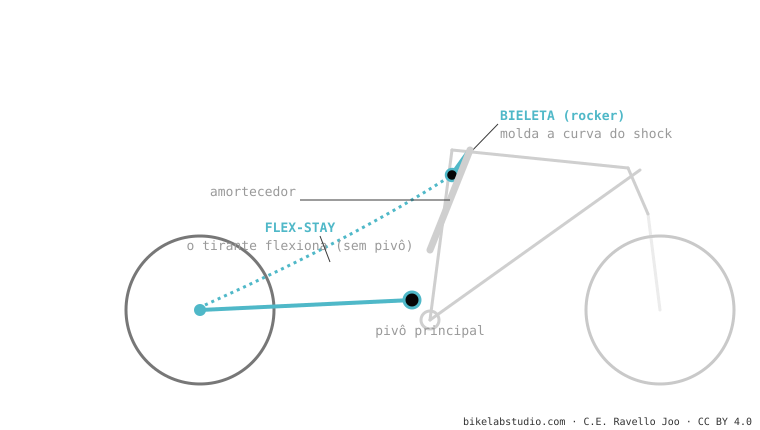

É um monopivô com dois truques: o amortecedor é movido por uma bieleta (para moldar a curva) e o pivô traseiro é substituído pela flexão do carbono (flex-stay), economizando peso e rolamentos. É o sistema dominante em XC e down-country (Scott Spark, Specialized Epic 8, Cannondale Scalpel, Orbea Oiz). Atenção: cinematicamente a roda continua traçando um arco de monopivô, não é um 4 barras real.
Se sua XC pesa pouquíssimo e "não tem pivô atrás", é isto. E as marcas vendem como "quatro barras", mas não é — e aqui explicamos por que isso importa.
Uma régua de plástico se dobra e volta sozinha. E se esse "dobrar" controlado substituísse um pivô com rolamentos? Isso é o flex-stay.

Não: sem pivô real perto do eixo, a roda segue um arco de monopivô. As marcas chamam de "4 barras" mas cinematicamente não é.
Tira rolamentos: economiza ~150-200 g e manutenção. Para cursos curtos, a flexão do carbono basta.
Diga o modelo e dizemos o comportamento dela e o setup ideal. Fale conosco pelo WhatsApp
© 2026 BikeLab Studio. Conteúdo sob CC BY 4.0: você pode copiar, traduzir e publicar, inclusive com fins comerciais. A citação é obrigatória. Sem atribuição, a licença é revogada automaticamente (CC BY 4.0, §6.a) e o uso passa a ser violação de direitos autorais: solicitamos a retirada do conteúdo e sua desindexação. · Design e propriedade: Carlos Ravello Joo